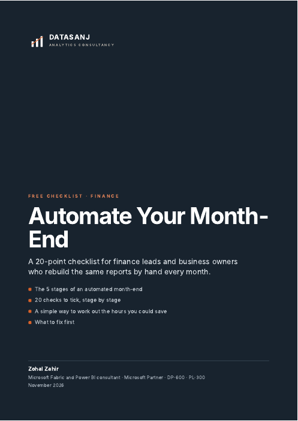

For finance managers, accountants and business owners
Month-end in hours, not days.
Your Xero, MYOB or QuickBooks data flows straight into management accounts, board packs and cash flow forecasts that build themselves and match your ledger. No more exporting to Excel.
Sound familiar?
If you tick two or more, month-end can be automated.
- Exporting from Xero or MYOB into Excel every month
- Mapping accounts by hand, again
- The board pack is late every month
- Budget vs actual built by copy and paste
- A cash forecast nobody quite trusts
- Only one person knows how the spreadsheet works
What you get
You can't manage what you can't see. Reports that refresh on their own, in Excel or Power BI, so the whole picture is there when you need it.
 Example management report, sample data
Example management report, sample data
What it looked like for other finance teams
Exports from an accounting system with no integration. Statements rebuilt by hand in Excel every month. No cash view.
Statements, branch reporting and cash reconciliation refresh from one import. Dashboard, budget vs actual and a 13-week cash forecast.
"This was a great investment… She is very detailed and able to take what I gave her to create something that will save me hours each month. She also created step by step video instructions."Client, nonprofit organisation · ★★★★★
Five days of manual consolidation. Numbers stale before the board read them.
An automated board pack on the measures the board actually asks for. Cash position visible while there is still time to act.
How it is priced
From AUD 90 an hour. You see the estimate first.
Every business is different, so there is no one price for month-end automation. Before any work starts, you get a written estimate of the hours for each stage. If something needs more time, we tell you and you approve it first. Nothing is discovered on the invoice.
Financial statements, cash flow and a forecast built from P&L, balance sheet and budget exports: about 45 hours, delivered in five stages.
What changes the hours
- How many systems and entities you have
- How clean your chart of accounts is
- How many reports, and how many people use them
- How flexible they need to be: a fixed pack, or drill-down and filters
- Excel, Power BI, or both
On the free call you get an honest view of the size of the job, and whether a smaller first step makes sense.
Start small
Four packs. Start with one.
Each pack works on its own and builds on the one before. Take what you need now, add the rest later.
Financial statements
Built automatically from your accounting exports every month.
- Profit and loss
- Balance sheet
- Budget vs actual, by department or entity
- Reconciled to your ledger
Cash flow
Where the cash went, and where it is going.
- Statement of cash flows
- 13-week cash forecast
- 12-month cash outlook
Scenario analysis
See what happens to profit and cash before you decide.
- Best, expected and worst case
- Simple drivers you control: sales, wages, payment days
- Scenarios side by side
Power BI dashboard
All of the above as an interactive dashboard for your team and board.
- Designed around the questions your board asks
- Drill from total to account
- Shared securely, each person sees their own data
- Ready for Copilot
These hours are rough estimates only. Every business is different, so book a free call to get a better estimate for yours, in writing, before anything starts.
How it works
Free call
Show us your current month-end.
Written estimate
Hours per stage, agreed before we start.
Build and reconcile
Each stage checked against your ledger.
Hand over
Videos, notes, and 30 days of free fixes.

Free download
Month-End Automation Checklist
Six pages. See which of your month-end steps can be automated, and what to fix first. Use it on your own, or bring it to the call.
Get the free checklistQuestions finance teams ask
Will the reports match our accounts?
Yes. Every report is reconciled to your general ledger before handover, and the checks stay in place so you can see if something stops matching.
Do we have to change our accounting software?
No. We work with what you have: Xero, MYOB, QuickBooks, Business Central or exports from other systems.
Can it stay in Excel?
Yes. If your team prefers Excel, we automate the templates you already use with Power Query. Power BI is added only if you want dashboards, drill-down or sharing on the web.
How much does it cost?
From AUD 90 an hour. Before any work starts you get a written estimate of the hours for each stage. If something needs more time than estimated, we tell you and you approve it first. Most projects are split into packs. As rough estimates only: financial statements (typically 16–24 hours), cash flow (8–12), scenario analysis (6–10) and a Power BI dashboard (typically 50–60). A free call gives you a better estimate for your business. The hours depend on how many systems and entities you have, how clean your chart of accounts is, how many reports you need and how flexible they need to be.
How long does it take?
Most month-end projects are built in stages over a few weeks, so you see the first statements working early and sign off each stage.
What happens when our chart of accounts changes?
Account mapping is kept in one simple table your team can update. You get step-by-step instructions, and for 30 days after handover anything that does not work as agreed is fixed free.
Is our financial data safe?
Everything is built inside your own Microsoft account. We follow your policies, sign an NDA where needed and remove access at handover.
Get your month-end days back.
A free 30-minute call. Show us how month-end works today, and you get an honest estimate of what automating it takes.